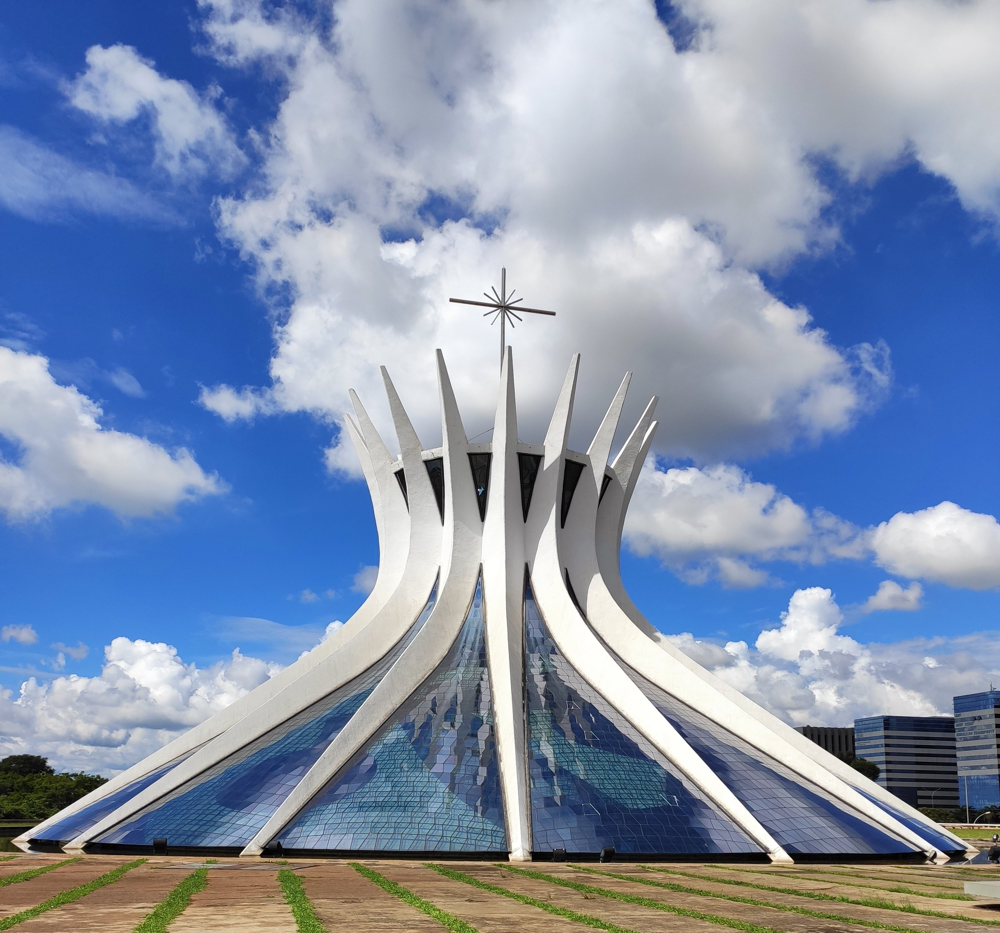
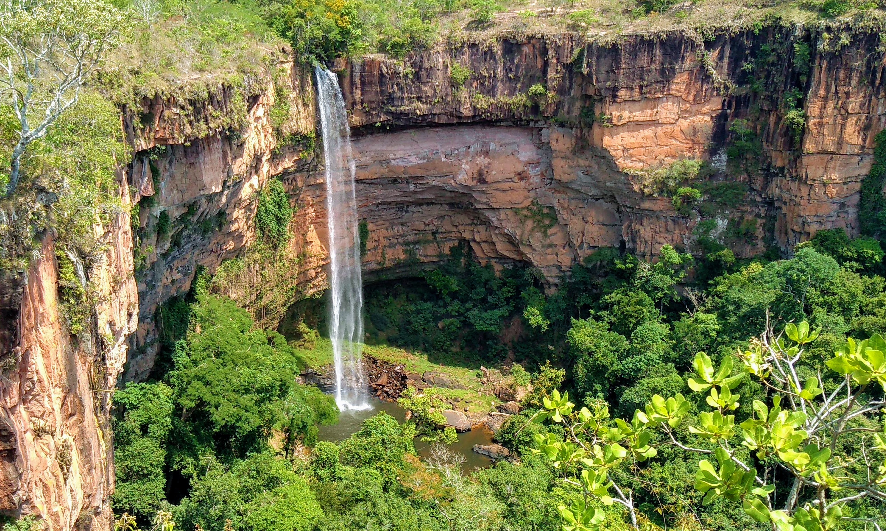

Região Centro Oeste
Composta pelos estados: Goiás, Mato Grosso, Mato Grosso do Sul e o Distrito Federal.
Principais pontos turísticos:
- Pantanal: A maior planície alagável do mundo, que abriga uma rica biodiversidade de animais e plantas, como jaguares, capivaras e ariranhas.
- Bonito: Uma cidade em Mato Grosso do Sul, conhecida por suas belezas naturais, como rios cristalinos, cavernas e cachoeiras.
- Serra do Roncador: Uma região no Mato Grosso, conhecida por suas montanhas, rios, cachoeiras e cavernas, além de lendas sobre civilizações perdidas e seres míticos.
- Parque Nacional da Chapada dos Veadeiros: Localizado em Goiás, é uma área de conservação ambiental com cachoeiras, rios, piscinas naturais, cânions e formações rochosas.
- Distrito Federal: Brasília, Catedral Metropolitana de Brasília, Memorial JK, Ponte JK.
- Goiás: Chapada dos Veadeiros, Pirenópolis, Cidade de Goiás, Parque Estadual Terra Ronca.
- Mato Grosso: Cuiabá, Chapada dos Guimarães, Pantanal, Parque Nacional da Chapada dos Guimarães.
Monumentos famosos:
- Catedral de Brasília - Brasília
- Torre de TV - Brasília
- Palácio do Planalto - Brasília
- Praça dos Três Poderes - Brasília
- Memorial JK - Brasília

Patrimônios culturais do Brasil
- Centro Histórico de Goiás - Goiás
Patrimônios imateriais do Brasil
- Moda de Viola - Goiás
Patrimônios Naturais Brasil
- Parque Nacional da Chapada dos Veadeiros - Goiás
- Parque Nacional do Pantanal Matogrossense - Mato Grosso

Melhor período para viajar
A melhor época para visitar o Centro-Oeste é durante a estação seca, de maio a setembro. Nesse período, o clima é mais ameno e as paisagens, como o Pantanal e o cerrado, ficam mais bonitas. O calor intenso do verão pode dificultar algumas atividades ao ar livre.

Clima
Esta região tem clima tropical, com duas estações bem definidas. A estação chuvosa vai de novembro a março e a estação seca de abril a outubro. As temperaturas são elevadas, com média anual de 25°C.
Comidas típicas
A culinária do Centro-Oeste é influenciada pela culinária típica do Pantanal e do cerrado, com pratos à base de carne bovina e de peixe. Algumas das comidas típicas são o arroz com pequi, o churrasco, a pamonha, o guariroba e o pacu assado.